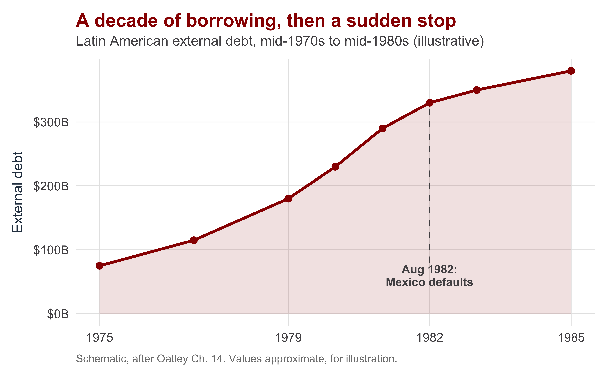
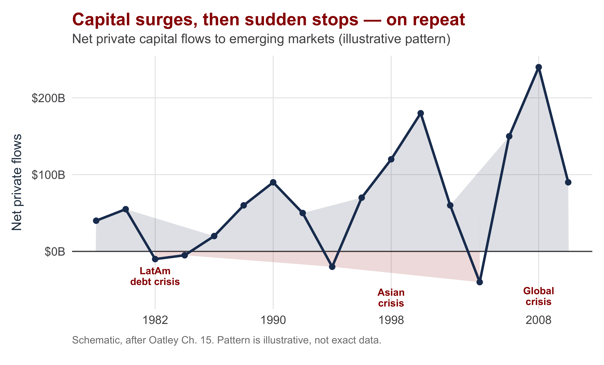

| Section | What we'll cover |
|---|---|
| 1 · Why Reach for Foreign Capital? | The savings gap and the menu of foreign capital |
| 2 · Sovereign Debt as a Hold-Up Problem | Why sovereign lending is risky — and happens anyway |
| 3 · The Latin American Debt Crisis | Petrodollars, the 1982 default, and the lost decade |
| 4 · The IMF as Crisis Lender | IMF structure, conditionality, four stages of over-borrowing |
| 5 · The Global Capital-Flow Cycle | Capital surges and sudden stops: the boom-and-bust pattern |
| 6 · The 1990s Emerging-Market Crises | Asia 1997 — fixed rates, short-term capital, and contagion |
| 7 · Evaluating the IMF — and Synthesis | Three critiques of the IMF, moral hazard, what ties it together |
Debt, Capital Flows, and Crisis in the Developing World
INTL 503 | Chapters 14 & 15
Professor Sarah Bauerle Danzman
July 27, 2026
Today’s Plan — A Combined Session
Today’s Big Question
Why does the foreign capital that is supposed to fuel development so often end in crisis?
Why Reach for Foreign Capital?
Section 1
The Savings Gap: The Case For Foreign Capital
Development requires investment — and investment requires savings. Poor countries are short of domestic savings.
- Foreign capital lets a country invest more than it saves at home
- In principle, capital flows from rich (capital-abundant) to poor (capital-scarce) economies, where returns are higher
- The payoff: faster growth than a country could self-finance
The promise. A dollar of foreign capital can add a dollar of investment a developing economy could not have funded on its own — the engine of catch-up growth.
The catch (today’s whole story): that same openness to foreign capital is what makes a country vulnerable to crisis when the flows reverse.
The Menu: Four Kinds of Foreign Capital
| Type | What it is | How it behaves |
|---|---|---|
| Foreign direct investment (FDI) | A foreign firm builds or buys productive assets it controls | Most stable — hard to pull out a factory overnight |
| Portfolio & bank lending | Bonds, equities, and bank loans — financial claims, not control | Most volatile — can be withdrawn at the first sign of trouble |
| Official aid / loans | Bilateral and multilateral assistance (World Bank, donors) | Stable but limited; was the main source in the 1950s–60s |
| Remittances | Money migrants send home to families | Strikingly stable, often counter-cyclical; now very large |
The stability column is the one to watch. Crises are overwhelmingly a story about the volatile forms — short-term bank lending and portfolio flows that can leave all at once.
Sovereign Debt as a Hold-Up Problem
Section 2
The Core Problem: Lending to Someone You Can’t Sue
Sovereign lending happens in an incomplete contracting environment:
- A state has incentives not to repay once it holds the money
- Lenders have no access to coercive force to compel a sovereign to honor the contract
- So the borrower has a commitment problem — it cannot credibly promise to repay
- And it has incentives to misrepresent its true ability to pay
The hold-up problem. If lenders expect to be stiffed, they won’t lend — and the developmentally useful capital never flows. How do we get past it?
This is the same credible-commitment logic from Chapter 13 — now on the borrower’s side of the table.
Why Lending Happens Anyway
Lenders proceed despite the hold-up risk because:
- Reputation — a defaulter is cut off from future borrowing, so states have reason to keep paying
- Rescheduling — lenders prefer to stretch out payments for a country with temporary (liquidity) trouble
- Write-downs — and to reduce the debt of a country that is genuinely insolvent
- An outside enforcer can make promises credible — enter the IMF
Liquidity vs. solvency — the distinction that runs through the whole day.
Liquidity: can’t pay right now, but fundamentally sound → reschedule.
Solvency: can’t ever pay the full burden → write down.
The Latin American Debt Crisis
Section 3
How the 1980s Crisis Was Built

The mechanism, step by step:
- Petrodollar recycling — 1970s oil windfalls flooded banks with cash to lend
- Banks lent heavily to Latin America at low, floating rates
- The Volcker shock (1979–82): U.S. rates soared, and so did debt-service costs
- August 1982: Mexico announces it cannot pay → lending stops everywhere
The Lost Decade — and the Diagnosis That Failed
The 1980s became Latin America’s “lost decade” — years of austerity, recession, and falling living standards across the region.
The early response treated it as a liquidity crisis:
- New loans + rescheduling, on the bet that growth would resume
- It didn’t — the debt was too large; this was insolvency
- Only with write-downs (the 1989 Brady Plan) did recovery begin
The lesson that travels. Misdiagnosing solvency as liquidity prolonged the pain for years. Lending more to an insolvent borrower just deepens the hole.
The crisis also became the lever for dismantling ISI — IMF and World Bank programs pushed the neoliberal reforms of Chapters 6–7.
The IMF as Crisis Lender
Section 4
What the IMF Is — and How It’s Built
Purpose: provide liquidity during crises, not development finance (that’s the World Bank). It is the institutional answer to the hold-up problem.
Structure — like a credit union:
- Members pay in quotas (set by GDP, openness, reserves)
- Quotas determine contributions, voting power, and access to financing
- Paid via Special Drawing Rights (SDRs) — a basket of $, €, £, ¥, RMB
- The U.S. holds an effective veto (major decisions need 85%; the U.S. share exceeds 15%)
Conditionality is the core tool: loans come with required policy reforms. It is how the IMF makes the borrower’s promise to adjust credible.
The two-edged design. Quota-weighted voting makes the IMF effective and well-funded — but also makes it look like an instrument of its largest shareholder.
The Four Stages of Over-Borrowing
| Stage | What happens |
|---|---|
| 1 · Ominous signs | Questions arise about a country's willingness or ability to service growing debt |
| 2 · Investors grow cautious | Lenders pull back or demand higher interest rates to cover the perceived risk |
| 3 · The squeeze tightens | Higher rates worsen the current account; the debt now grows faster |
| 4 · The downward spiral | More lenders lose faith and exit, rates rise further, and the cycle feeds itself |
A self-fulfilling dynamic: the fear of default helps cause the default. This is why a credible outside lender can sometimes stop a crisis simply by showing up.
Anatomy of a Rescue: Mexico, 1994–95
- Mexico pegged the peso to the dollar to anchor stability and court NAFTA investment
- It financed a large current-account deficit by borrowing in dollars — which locked it into defending the peg
- Political shocks in 1994 (Chiapas, an assassination) spooked investors; reserves drained
- A $50B U.S./IMF package in 1995 stopped the run; Mexico recovered fast and repaid early
Who exactly got rescued? The IMF effectively absorbed the default risk; Mexican taxpayers absorbed the inflation/devaluation risk — and foreign lenders were largely made whole.
Counted an IMF success — fast recovery, loans repaid ahead of schedule, a democratic transition by 2000. But the distribution of who-bore-what is the controversy.
The Global Capital-Flow Cycle
Section 5 · Chapter 15 begins
The Boom-and-Bust Pattern

The defining fact of Chapter 15: capital flows to developing countries come in waves — large surges followed by sharp sudden stops and reversals.
Volatility carries a real cost. The evidence links more-volatile capital flows to lower long-run growth and boom-bust instability — the opposite of the smooth catch-up the theory promised.
What Drives the Cycle: Push and Pull
Push factors (external)
- Low interest rates in rich countries send money hunting for yield abroad
- Global “risk-on” sentiment
- Largely outside the borrowing country’s control
Pull factors (internal)
- Reforms, growth prospects, high domestic returns
- A credible exchange-rate peg
Why this is sobering. When the surge is driven by push factors, the timing of the stop is set in New York or Frankfurt — not by anything the developing country did right or wrong.
The Volcker shock (Ch 14) and the global rate cycle are push factors. A crisis can arrive even when domestic policy was sound.
The 1990s Emerging-Market Crises
Section 6
The Asian Financial Crisis, 1997–98
The shared anatomy of the 1990s crises:
- A surge of short-term foreign capital into fast-growing economies
- Funds often tied to a fixed (or pegged) exchange rate that looked safe
- A maturity/currency mismatch — borrow short and in dollars, invest long and in local projects
- Sentiment turns → sudden stop → the peg breaks → crisis cascades by contagion
Thailand → Indonesia → South Korea → beyond. Each crisis was distinctive, but all shared a fixed rate plus heavy reliance on short-term foreign capital.
The cruel twist: these were the “miracle” economies — high growth, high savings, sound budgets. Their flaw was financial structure, not fiscal recklessness.
The IMF’s Contested Response — and the Aftermath
The IMF’s Asian programs drew heavy criticism:
- It prescribed austerity and high interest rates — a fiscal-crisis remedy for a financial-structure crisis
- Many argued this deepened the downturns
- Conditions reached deep into domestic institutions, raising sovereignty objections
The lasting legacy: self-insurance. Stung by IMF conditionality, emerging economies built massive foreign-exchange reserves so they would never need to ask again.
Those reserves — especially in China — became a pillar of the global imbalances behind the 2008 crisis. The 1997 cure seeded the next problem.
Evaluating the IMF — and Synthesis
Section 7
Three Claims Against the IMF
| The claim | What the evidence says |
|---|---|
| It creates "debt traps" | Programs improve balance-of-payments positions but not growth; huge selection effects make clean evaluation hard |
| Its conditions are too harsh | Hard to enforce conditions in practice (Stone 2008); leaders use the IMF as political cover; harsh Asian terms drove reserve build-ups |
| It's a tool of the U.S. and Western banks | The 1994 Mexico deal shifted losses onto global taxpayers (Oatley & Yackee); U.S. allies and big bank creditors get more favorable bailouts (Broz & Hawes) |
Selection effects are the analyst’s core problem: countries go to the IMF because they are already in crisis, so comparing them to non-borrowers isn’t apples-to-apples.
Synthesis: Two Episodes, One Logic
| Dimension | Latin America (1980s, Ch 14) | Asia (1997, Ch 15) |
|---|---|---|
| Trigger | U.S. rate shock (Volcker), 1979–82 | Sentiment reversal & sudden stop, 1997 |
| Capital type | Bank loans to governments (sovereign) | Short-term private capital + currency mismatch |
| Who looked at fault | Governments — over-borrowing, ISI | Financial structure — not fiscal recklessness |
| The IMF's role | Crisis lender; lever for neoliberal reform | Contested austerity; sovereignty backlash |
| Lasting legacy | The "lost decade"; the Brady write-downs | Reserve self-insurance → global imbalances |
Same spine, different vertebrae: surge → buildup → sudden stop → crisis → IMF. The trigger and the kind of capital differ, but the underlying dynamic is one logic.
Recap: Why Capital and Crisis Travel Together
Today’s Big Question — Why does the foreign capital that is supposed to fuel development so often end in crisis?
What we built
- Foreign capital fills the savings gap — but the volatile kinds bring crisis risk
- Sovereign lending is a hold-up problem; the IMF is the institutional answer
- Liquidity vs. solvency is the distinction that decides whether rescheduling or write-downs are the cure
- Crises follow a self-fulfilling four-stage spiral
The two episodes
- Latin America (1980s): sovereign debt + a U.S. rate shock → the lost decade
- Asia (1997): short-term capital + mismatch → contagion → reserve self-insurance
- The IMF helps stop panics but raises real questions of whose interests it serves
Looking ahead: tomorrow we leave the textbook to ask how states weaponize this same interdependence — economic coercion.

INTL 503 | Debt, Capital Flows, and Crisis in the Developing World